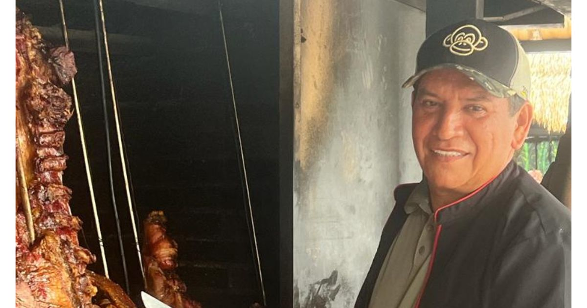

Mamona al Palo
Nuestro plato insignia: ternera asada al palo, lento sobre brasa de leña.
Plato Insignia
Cargando tradición llanera
Tradición llanera, mamona auténtica y el sabor de los abuelos en cada plato.

Turistas y propios han visitado por más de dos décadas este establecimiento para degustar la mamona, ese plato típico de la región a base de carne de ternero que también hace parte de la tradición gastronómica de la familia Falla Ballestero.
"Es una tradición de mis abuelos, quienes preparaban la mamona y le enseñaron a mi padre y a mis tíos. Por esa razón nuestra familia se ha dedicado a exaltar nuestra cultura por medio de este plato autóctono de los llanos." — Angélica Falla, administradora e hija del fundador
Fundado en 1998 por Julio César Falla Ballestero, un llanero de corazón, comenzó como un pequeño establecimiento con estricto cuidado en la preparación de la carne, conservando la autenticidad de la receta que hoy nos consolida como un referente de la gastronomía típica.
Cada plato es un viaje a la sabana: la mamona asada al palo, la mojarra fresca del río, el chicharrón crocante y la picada que acompaña toda buena conversación.
Nuestro plato insignia: ternera asada al palo, lento sobre brasa de leña.
Plato Insignia
Fresca del río, con papa criolla y patacón.

Crocante por fuera y bien carnudo por dentro.

Cortes jugosos asados sobre leña, como en la sabana.

Camarón, mejillón y cangrejo: del mar al llano.

Pa' compartir en familia: surtido de carnes, rellena, papa y plátano.
Para Compartir
Entre el aroma del fogón, el sonido del arpa, el cuatro y las maracas, en El Amarradero del Mico no solo comes: vives el llano. Cada visita es una celebración de nuestra identidad, de la hospitalidad llanera y del recio orgullo de ser de esta tierra.
Tres puntos en el Meta para que disfrutes la auténtica tradición llanera de la familia Falla Ballestero.
 Sede Principal
Sede Principal
Kilómetro 1, vía aeropuerto Vanguardia
Villavicencio, Meta
Única sede con servicio a domicilio
Nuestro restaurante emblemático fundado en 1998. Metros antes de la glorieta que conduce al aeropuerto y a la población de Restrepo.
 Nueva Sede
Nueva Sede
Galería 7 de Agosto
Villavicencio, Meta
Nuestro nuevo punto en el corazón comercial de la ciudad, llevando la tradición de la mamona a más familias villavicenses.
 Sede Campestre
Sede Campestre
Kilómetro 12, Vía Alterna
Villavicencio — Puerto López, Meta
Nuestro punto campestre en plena vía a Puerto López. Un espacio amplio rodeado de naturaleza llanera, ideal para vivir la experiencia tradicional sin salir de Villavicencio.
Estamos en el Kilómetro 1 vía aeropuerto Vanguardia, en pleno corazón del Meta. Aquí comenzó la tradición en 1998 y aquí te esperamos con la mejor mamona de Villavicencio.
Abrir en Google MapsMás de dos décadas siendo referente de la cultura llanera. Estos son algunos medios donde han contado nuestra historia.
Un homenaje a Julio César Falla Ballestero, fundador de El Amarradero del Mico, y a la tradición llanera que ha construido durante más de dos décadas.
Leer en El Tiempo
La crónica de cómo El Amarradero del Mico se convirtió en un referente gastronómico del llano y un símbolo de la cultura villavicense.
Leer en Las2Orillas
Pulzo reseña la experiencia gastronómica del asadero llanero más reconocido del Meta y revela los precios de su mamona y platos típicos.
Leer en Pulzo
Eventos familiares, empresariales, celebraciones especiales o simplemente un buen plato de mamona. Reserva tu mesa y déjanos atenderte como solo en El Amarradero del Mico sabemos hacerlo.